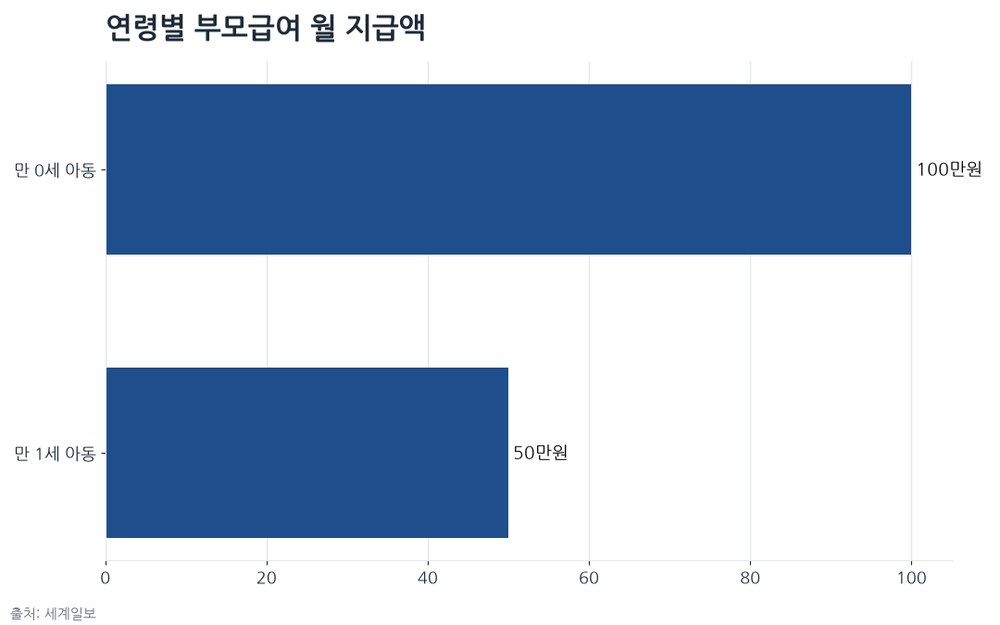

2026-11-25-1751-tistory 발행 키트 · 이 페이지는 검색에 노출되지 않습니다.
제목
카테고리
일상태그
본문 (그림·표 포함)
휴대폰 블로그 앱에서는 그림이 같이 붙지 않을 수 있어요. 그때는 [글자만 복사] 후 아래 이미지를 저장해 [그래프1]·[표1] 자리에 첨부하세요.
핵심 요약입니다. 연말을 앞두고 일부 지자체에서 11월분 부모급여 지급이 늦어지고 있으며, 밀린 금액은 12월 또는 내년 1월에 소급해서 지급될 예정입니다. 지급 시기가 지역별로 다르므로 거주지 안내를 확인해야 합니다.
▶ 배경: 부모급여 제도 개요
부모급여는 영유아 가정에 현금으로 지급하는 제도입니다. 만 0세 아동은 월 100만원, 만 1세 아동은 월 50만원이며, 정기 지급일은 매달 25일입니다.

▶ 핵심 내용: 지연이 확인된 지역과 사유
보도 기준으로 지연이 확인된 곳은 경기도 일부 시(파주, 광명, 안양, 남양주 등), 대구 동구, 경남 양산입니다. 전국 곳곳에서 같은 현상이 나타나고 있다고 전해졌습니다.
지연 사유로는 세 가지가 거론됩니다. 경기도 보조금 교부 지연, 보건복지부 예산 집행 지연, 지자체 예산 부족입니다. 지역에 따라 사유가 겹치기도 합니다.
▶ 지역별 소급 지급 일정
보도에 나온 소급 지급 일정은 아래 표와 같습니다. 지자체가 문자로 개별 안내한 내용이며, 이후 변경될 수 있습니다.
부모급여 지연 지역별 소급 지급 일정
| 지역 | 소급 시기 | 방식 |
|---|---|---|
| 경기도 | 12월 | 11월분 포함 2개월분 합산 |
| 대구 동구 | 12월 | 11월분 소급 |
| 경남 양산 | 다음 달 | 소급 지급 |
| 일부 지역 | 내년 1월 | 일괄 지급 |
출처: 세계일보
경기도는 11월분을 12월에 2개월분으로 합쳐 지급하는 방식입니다. 일부 지역은 내년 1월에 일괄 지급한다고 안내했습니다.
▶ 영향: 가계에 미치는 부분
한 달 치 지급이 늦어지는 것만으로도 분유·기저귀 같은 고정 지출 계획이 흔들린다는 부모들의 반응이 나왔습니다. 지급 총액이 줄어드는 것은 아니지만 현금 흐름에는 공백이 생깁니다.
전문가(영남대 교수)는 지자체 예비비를 우선 투입하거나 교부 절차를 앞당기는 등의 행정적 보완이 필요하다고 지적했습니다.
▶ 확인할 점
1. 거주 지자체의 정확한 지급일: 주민센터 또는 시·군·구청 복지 부서에 문의합니다.
2. 안내 문자 보관: 합산 지급액이 맞는지 나중에 대조할 때 필요합니다.
3. 12월 지급액: 11월분과 12월분이 합쳐 들어오는지, 각각 들어오는지 확인합니다.
4. 대체 자금 계획: 이번 달 필수 지출을 먼저 정하고 나머지는 소급 지급 이후로 조정합니다.
▶ 함께 알아둘 생활 소식: 홈플러스 임시휴업
같은 날 보도에 따르면 기업회생 절차를 밟고 있는 홈플러스가 상품 매입 자금 부족으로 27일부터 전 점포 영업을 임시 중단할 것으로 전해졌습니다. 지난 20일을 기점으로 신선식품 납품이 대부분 끊겼다는 내용도 있습니다.
육아용품을 해당 마트에서 구입해 왔다면 방문 전 점포 공지를 확인하고 대체 구입처를 정해 두는 것이 안전합니다.
▶ 정리
1. 11월분 부모급여가 늦어지는 지역이 있으며, 사유는 보조금 교부·예산 집행 지연과 지자체 예산 부족입니다.
2. 밀린 금액은 12월 또는 내년 1월에 소급 지급될 예정이나 지역별로 다릅니다.
3. 거주지 지급일을 직접 확인하고, 안내 문자를 보관해 두십시오.
출처 (본문 맨 아래에 붙여넣기 권장)
- 세계일보, “당장 분유·기저귀 값 어쩌나”…부모급여 밀린 육아 가정 분통, https://www.segye.com/newsView/20261125513523 - 세계일보, 홈플러스, 27일부터 전 점포 임시휴업…"상품 매입자금 부족", https://www.segye.com/newsView/20261125513425